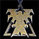
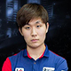
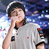
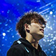

T·M·B·A
T·M·B·A介绍
T·M·B·A团队是“星际争霸2”发布“虚空之遗”资料片以来，表现突出的5名人族选手，他们分别是TY,INNOVATION,MARU,BYUN以及ALive。团队名称取得即是这5名选手ID的头位字母所组成的。同时TIMBA在“星际争霸2”中还有调侃T这个种族IMBA的意味。
成员简介
TY
TY,全太阳，1994年09月18日出生于韩国，《星际争霸2》人族职业选手，擅长多线骚扰，正面偏软.KT俱乐部解散后，目前无战队。目前被国内玩家戏称：全教主。寓意他继承了教主Flash的名号。
INNOVATON
韩国顶级人族选手，中文名：李信衡，星际争霸1曾用ID：Bogus(假钞)，转入星际争霸2后改ID为：INnoVation(启示、创新)。擅长正面操作，正面一拳无比凶狠。人送外号：卫星哥，掌门人。
MARU
Jinair.Maru。韩国星际争霸2职业玩家，是目前世界上最顶尖的人族选手之一。曾完成了OSL最年轻的的王者之路。最擅长的操作是TVZ中散枪兵的正面操作。打法凶狠，外号：唐马儒，小天使。BYUN
ByuN在今年韩国星际2崩盘大变动的局势下，通过自己个人的努力，最终乱世出豪杰，收获了两个星际2含金量最高的个人赛奖项：GSL韩国冠军与WCS全球总决赛冠军。同时由于他在GSL夺冠时并无所属战队，也被大众称为“一个人的军队”，其事迹在深受个人英雄主义影响的美国媒体中很受推崇。
ALive
Alive对于以上几位选手，不论是名气还是纸面实力来说，可能都有所不足，但是从“虚空之遗”发布开始，他就有了“虚空3大T”的称号。他是一位打理解的选手，在中后期大局观的理解上十分深厚。最近的比赛，更是把掌门人，BYun等人打爆。所以中国玩家最后都笑言，TIMBA最后还是只要一个"A"。


